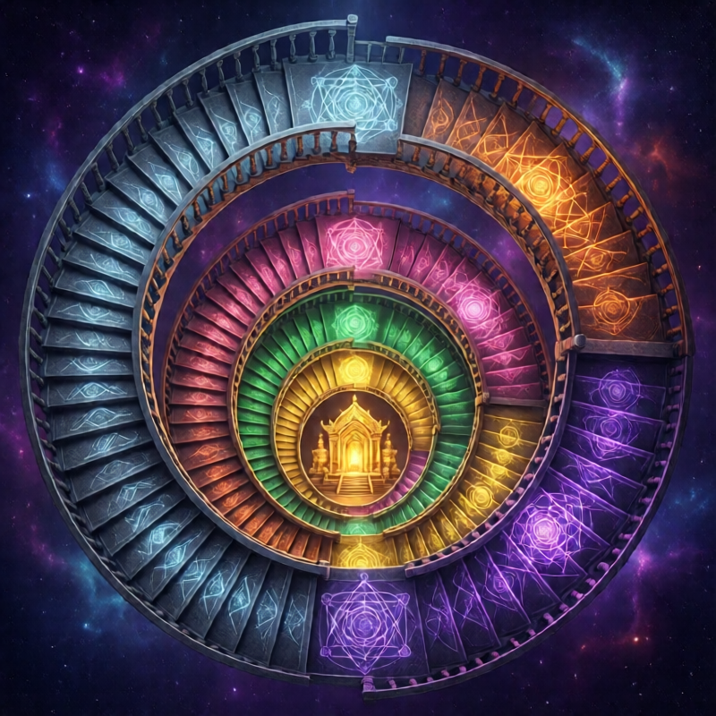
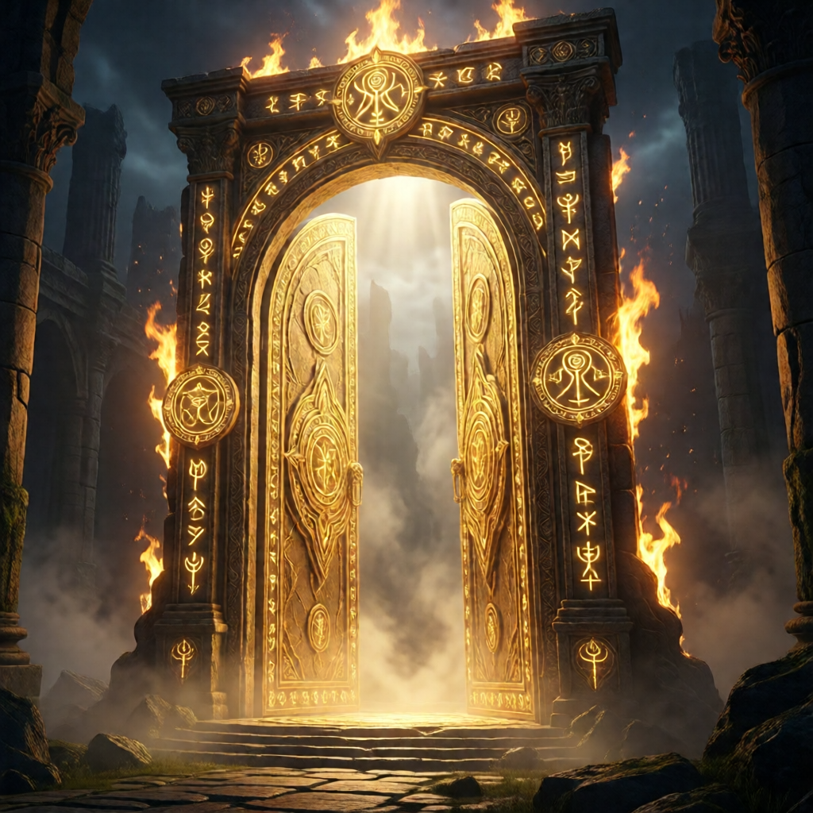
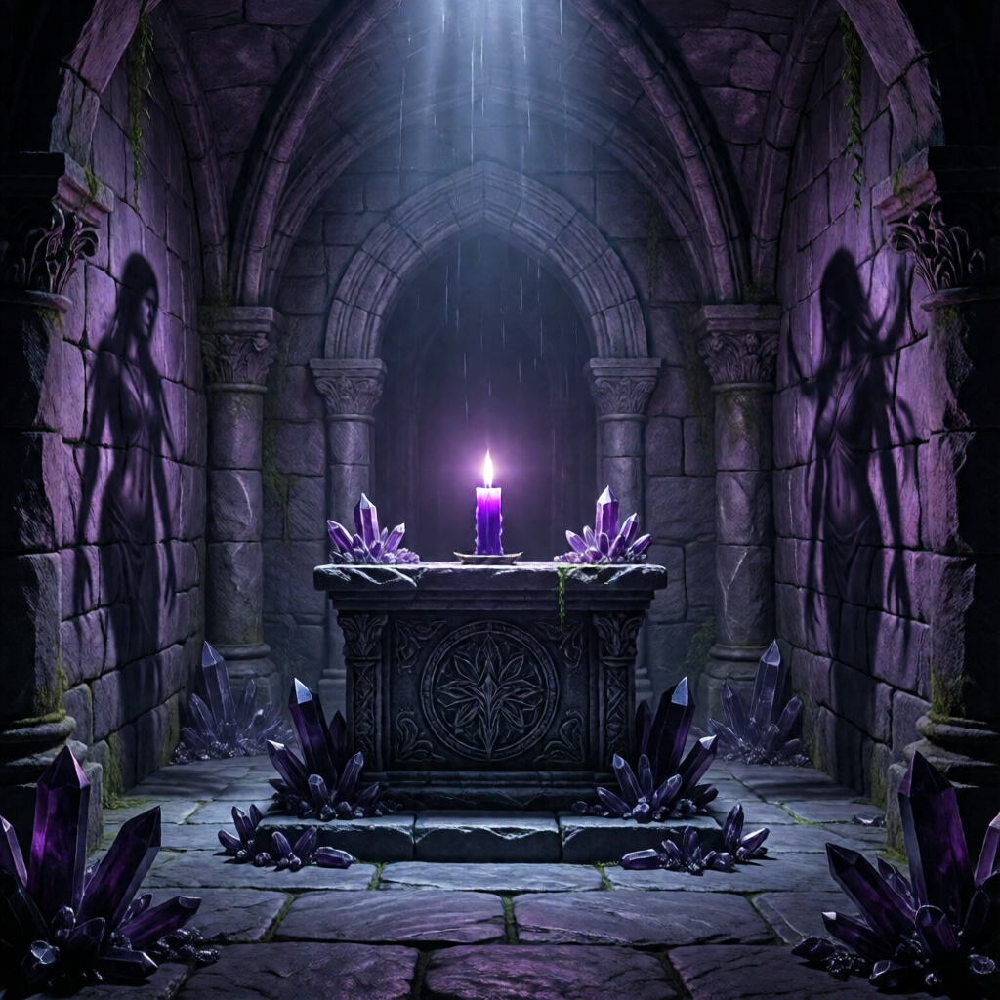
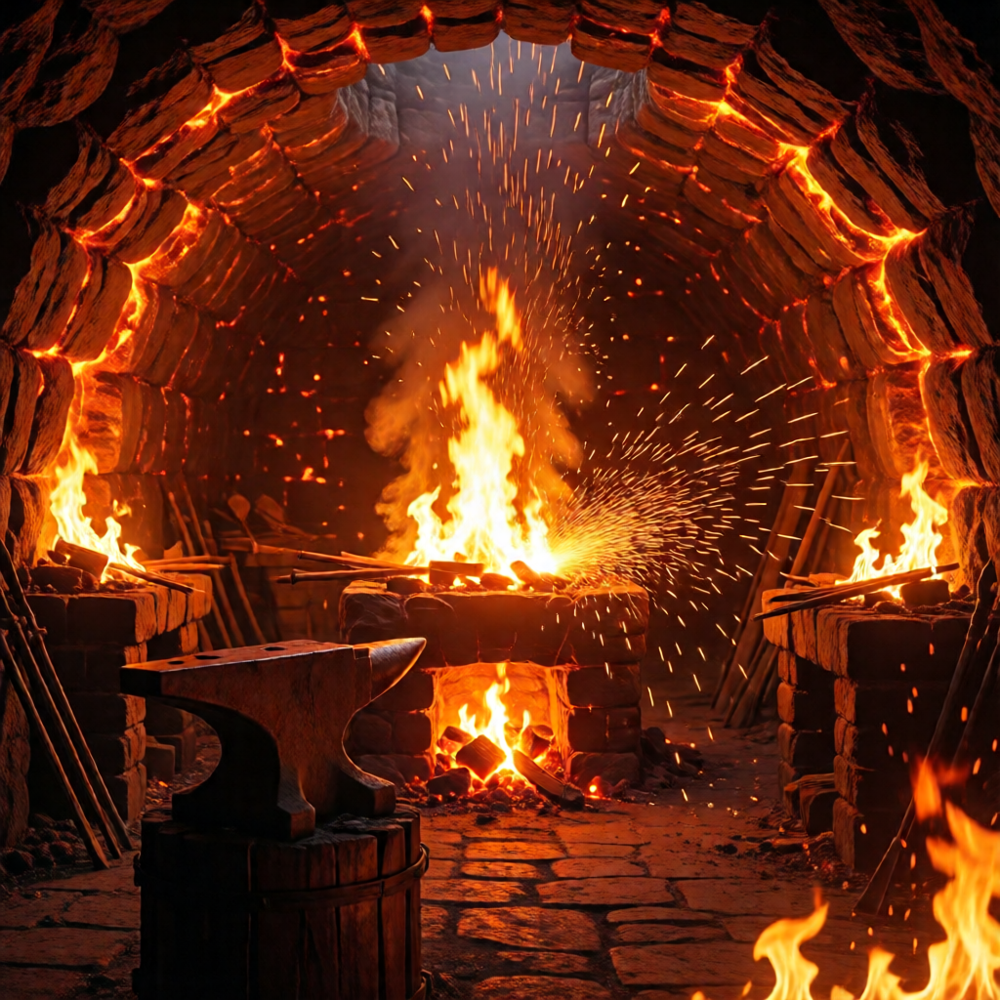
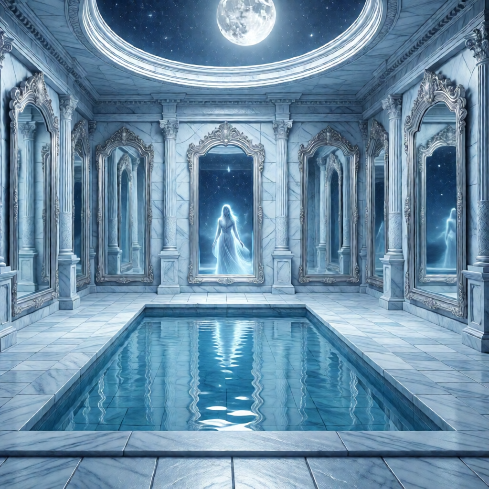
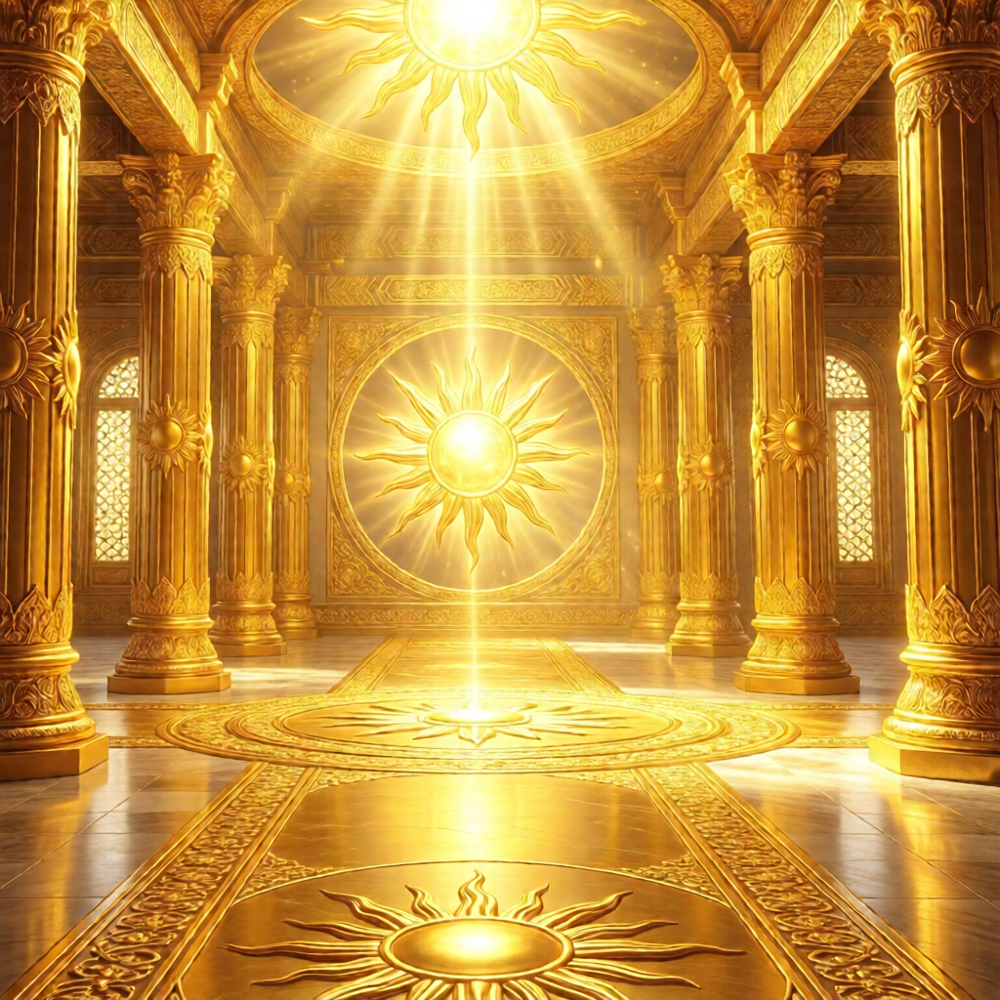
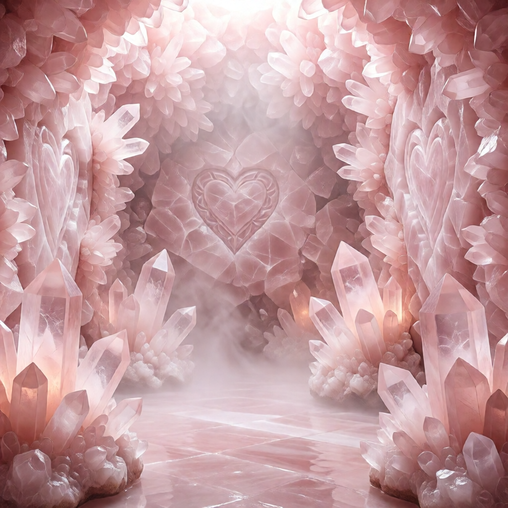
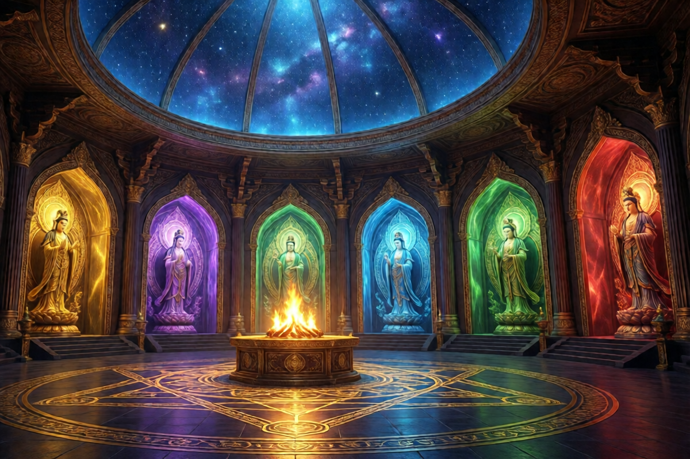

Великая Инициация
Путь к Чертогу Амарессы
Подготовка
Выбери время, когда тебя не побеспокоят. Вечер или ночь — лучше всего. Отключи телефон. Закрой дверь.
Тебе понадобится:
- Золотая или белая свеча (свеча-проводник)
- Тихое место, где можешь сидеть или лежать
- Тёплое покрывало
- Стакан воды (для возвращения)
Зажги свечу. Сядь удобно или ляг. Укройся, если прохладно. Тело должно быть расслаблено, но не засыпать.
Смотри на пламя. Дыши глубоко и ровно.
Произнеси вслух или про себя:
Свеча — мой проводник.
Огонь — мой защитник.
Иду к Амарессе, Ткачихе Судеб.
Да будет путь открыт.»
Закрой глаза. Дыши. Считай выдохи от двадцати одного до одного. С каждым выдохом тело становится тяжелее, а сознание — легче.
Ты погружаешься глубже.
Десять... девять... восемь...
Тело почти не чувствуется.
Три... два... один.
Врата Входа
Перед тобой — темнота. Тёплая, бархатная темнота.
В этой темноте появляется свет. Маленькая точка, как далёкая звезда. Она растёт. Приближается. Это не звезда — это пламя.
Пламя становится больше. Оно формирует арку — высокую, как ворота замка. Огненные врата. Языки пламени танцуют, но не обжигают. Это живой огонь. Он узнаёт тебя.
По обе стороны врат стоят две фигуры из чистого света. Хранители порога. Они не спрашивают — они видят твоё намерение.
Один из них протягивает руку. В ладони — маленький огонёк, как свеча без воска. Он говорит:
Ты берёшь огонёк. Он ложится в твою ладонь — тёплый, живой, пульсирующий в такт сердцу.
Второй хранитель говорит:
Ты делаешь шаг к вратам. Пламя расступается. Ты проходишь сквозь него — тепло обнимает тело, как вода в тёплой реке. Ни страха, ни боли. Только свет.
И вот ты — по ту сторону.
Первый Чертог: Моригена
Зал Отпускания
Ты стоишь на краю сумеречного леса. Деревья высокие, чёрные, без листьев. Между стволами стелется фиолетовый туман. Пахнет землёй, прелыми листьями и чем-то сладким — как засохшие цветы.
Это не страшное место. Это место покоя. Здесь всё, что умерло, находит отдых.
Тропинка ведёт вглубь леса. Искра в твоей ладони освещает путь. Иди.
Деревья расступаются. Ты выходишь на поляну. В центре — большой костёр, горящий фиолетово-чёрным пламенем. Оно не даёт тепла — оно забирает.
У костра сидит женщина. Высокая, в длинных тёмных одеждах. Лицо спокойное, древнее, красивое той красотой, что приходит только с принятием всего. Глаза — как колодцы, в которых отражаются звёзды.
Это Моригена, Хозяйка Перехода.
Слова Моригены:
Она встаёт. Подходит ближе. Протягивает руку.
Почувствуй: что ты несёшь мёртвого? Какие обиды? Какие сожаления? Какие «если бы»? Какие старые версии себя, которых больше нет?
Не обязательно называть. Просто почувствуй тяжесть. И представь, как она выходит из тебя — тёмным дымом, серым туманом, чёрными камнями. Отдай это Моригене.
Она берёт всё. Бросает в костёр. Пламя вспыхивает — яркое, белое на мгновение. Потом успокаивается.
Дар Моригены: Чёрное перо. Большое, гладкое, с фиолетовым отливом.
Ты берёшь перо. Оно невесомое, но ты чувствуешь его силу.
Моригена указывает на тропу, уходящую вверх по склону холма:
Второй Чертог: Хефаэлла
Горн Воли
Тропа ведёт вверх. Лес заканчивается. Начинаются скалы — чёрные, острые, с прожилками красного, как застывшие вены.
Становится жарче. Ты слышишь гул — низкий, ритмичный. Удары молота о металл. Гул горна.
В скале — вход. Широкий тоннель, освещённый красным светом изнутри. Жар усиливается с каждым шагом.
Ты входишь.
Пещера огромна. В центре — горн, из которого бьёт белое пламя. Наковальня. Инструменты на стенах. Искры летят во все стороны.
У наковальни стоит женщина. Мускулистые руки покрыты сажей. Кожаный фартук. Волосы собраны, несколько прядей выбились и прилипли к потному лбу. Глаза — как расплавленный металл, золотисто-красные.
Это Хефаэлла, Госпожа Горна.
Слова Хефаэллы:
Она берёт с наковальни кусок раскалённого металла щипцами.
Она бьёт молотом по металлу. Искры летят.
Она опускает металл в воду. Шипение, пар.
Хефаэлла указывает на узкий проход между двумя стенами огня. Пламя — настоящее, жаркое.
Ты смотришь на проход. Жар ощутим даже отсюда. Но ты прошёл Моригену. Ты отпустил мёртвое. Ты легче.
Сделай шаг. И ещё один. Войди в жар.
Огонь охватывает. Горячо — но не больно. Это очищающий жар. Ты чувствуешь, как выгорают сомнения — «а вдруг не получится», «а что подумают», «я не справлюсь». Всё это — сгорает.
Ты выходишь с другой стороны. Цел. Но другой.
Дар Хефаэллы: Железное кольцо. Простое, грубое, но крепкое.
Третий Чертог: Эстиора
Очаг Сердца

Тоннель ведёт вниз, потом снова вверх. Жар остаётся позади. Воздух становится мягче, теплее — но по-другому. Не жаром кузницы, а уютом.
Ты выходишь на холм. Внизу — долина. Зелёная трава, река, рощи. И домик с дымком из трубы.
Дом деревянный, старый, но крепкий. Резные наличники. Крыльцо с лавкой. Дверь приоткрыта. Изнутри — запах хлеба, трав, дыма от печи.
Ты входишь.
Большая комната. В центре — огромная печь, беленая, с узорами. На ней — кот, спит. У печи — кресло-качалка. Стол накрыт простой едой — хлеб, молоко, мёд.
В кресле сидит женщина. Тёплая, мягкая, с добрыми морщинками у глаз. Руки — в муке, на коленях — вышивка. Пахнет от неё хлебом и ромашкой.
Это Эстиора, Хранительница Очага.
Слова Эстиоры:
Она указывает на стул у стола. Ты садишься. Берёшь хлеб — он тёплый, живой. Молоко — свежее, сладкое.
Она смотрит на тебя внимательно.
Подумай об этом. Есть ли у тебя ощущение внутреннего дома? Чувствуешь ли ты себя принятым — хотя бы самим собой? Есть ли корни — связь с родом, землёй, местом?
Дар Эстиоры: Камень очага. Гладкий, тёплый, оранжево-коричневый.
Эстиора обнимает тебя. Крепко, по-матерински. Ты чувствуешь — одиночество уходит. Ощущение отверженности, ненужности — тает.
Она указывает на дверь в другом конце комнаты:
Четвёртый Чертог: Нурина
Сад Изобилия
Ты выходишь из дома — и оказываешься в саду. Но какой это сад!
Деревья ломятся от плодов. Яблоки, груши, виноград, гранаты — всё спелое, сочное. Цветы — огромные, яркие, ароматные. Пчёлы гудят. Бабочки порхают.
В центре сада — накрытый стол. Скатерть расшита золотом. На столе — яства. Хлеб с хрустящей корочкой. Жаркое в глиняном горшке. Фрукты горой. Вино в кувшине. Мёд в сотах. Сыры, орехи, пироги.
За столом хлопочет женщина. Полная, улыбчивая, в цветастом платье и белом фартуке. Щёки румяные. Руки — быстрые, ловкие. На поясе — связки трав и чеснока.
Это Нурина, Госпожа Изобилия.
Слова Нурины:
Ты подходишь к столу. Нурина подаёт тебе тарелку — на ней всего понемногу.
Ты ешь — и понимаешь: это не обычная еда. Каждый кусок — как будто насыщает не только тело, но и душу. Голод, о котором ты даже не знал — голод по достатку, по полноте жизни — утоляется.
Она наливает тебе вина.
Дар Нурины: Золотое зерно. Маленькое, но сияющее.
Ты берёшь зерно. Оно тёплое, живое. Ты представляешь, как оно опускается в сердце, пускает корни.
Пятый Чертог: Люминара
Башня Света
За оградой сада — поле. Золотая пшеница колышется на ветру. Небо — синее, глубокое, с редкими облаками.
В центре поля — башня. Высокая, из белого камня или хрусталя — она сияет на солнце. Винтовая лестница снаружи ведёт вверх.
Ты поднимаешься. С каждым витком — виднее окрестности. Сад Нурины. Дом Эстиоры. Горы Хефаэллы вдали. Сумеречный лес Моригены на горизонте.
Наконец — вершина.
Площадка открыта небу. Ветер треплет волосы. Солнце — прямо над головой, но не слепит.
В центре площадки танцует женщина. Молодая, сияющая. Платье — из света, из солнечных лучей. Вокруг неё — искры, как маленькие звёзды. Она смеётся — и смех её звенит как колокольчики.
Это Люминара, Несущая Свет.
Слова Люминары:
Ты не умеешь танцевать? Здесь — умеешь. Она берёт тебя за руки, кружит. Ты двигаешься легко, свободно. Смех поднимается из груди — не понятно откуда, но он есть.
Люминара танцует, и ты с ней. Вокруг вас — свет, искры, радость.
Наконец она останавливается. Смотрит тебе в глаза.
Она дует тебе в лицо — как мама дует на ранку.
Дар Люминары: Искра радости. Маленький свет внутри груди.
Люминара указывает на лестницу, ведущую вниз — но в другую сторону:
Шестой Чертог: Софиэль
Библиотека Вечности
Лестница ведёт вниз — и ты оказываешься в помещении, которое больше башни снаружи. Это невозможно — но здесь возможно всё.
Библиотека. Бесконечная. Полки уходят вверх, теряясь в темноте. Полки уходят вдаль, теряясь в полумраке. Книги, свитки, фолианты. Миллиарды знаний.
Между полками — свечи. Тысячи свечей. Они освещают проходы мягким золотистым светом.
Тихо. Пахнет старой бумагой, воском, мудростью.
В центре — стол. За столом — женщина. Худая, с острыми чертами лица. Волосы — бело-голубые, как холодное пламя. Глаза светятся изнутри — мягко, но пронзительно.
Это Софиэль, Пламя Разума.
Слова Софиэль:
Она откладывает книгу, которую читала.
Подумай. Что ты на самом деле хочешь знать? О себе? О жизни? О пути?
Сформулируй вопрос. Мысленно или вслух.
Софиэль молчит мгновение. Потом кивает.
Дар Софиэль: Перо мудрости. Белое, сияющее, острое.
Софиэль касается твоего лба двумя пальцами. Прохладное прикосновение.
Софиэль указывает на дверь между полками:
Центральный Храм Амарессы

Ты проходишь через дверь — и оказываешься в пространстве, которое невозможно описать. Попробую.
Храм. Огромный. Стены — из чистого золота, но не мёртвого, ювелирного — живого, тёплого. Свод теряется высоко. В центре свода — отверстие, через которое льётся свет — не солнечный, другой.
По периметру храма — шесть огней. Шесть больших чаш на постаментах. В каждой — пламя определённого цвета:
- Фиолетово-чёрное — Моригена
- Красно-оранжевое — Хефаэлла
- Тёплое оранжевое — Эстиора
- Зелёно-золотое — Нурина
- Ослепительно-белое — Люминара
- Голубое — Софиэль
Эти огни — отражения богинь, которых ты встретил. Они здесь, с тобой.
За алтарём — бесконечность. Стены храма раздвигаются, и ты видишь... Полки. Тысячи полок. Миллионы. Уходящие вверх, в стороны, в бесконечность. И на каждой полке — свечи. Свечи всех живых существ.
Внизу — полки темнее, свечи там еле тлеют, некоторые погасли. Это полки непробуждённых, заблудших, погрязших в тяготах. Выше — свечи горят ярче, ровнее. Ещё выше — пламя танцует, свечи сияют. На самых высоких полках — свечи-факелы, несущие свет другим.
У полок стоит Она.
Амаресса.
Волосы — как языки золотого пламени. Глаза — расплавленный янтарь. Одежда — из тканого света. В руках — воск.
Она смотрит на тебя. И ты понимаешь — Она видит тебя насквозь. Всё, что было. Всё, что есть. Всё, что может быть.
Слова Амарессы:
Она протягивает руку.
Ты достаёшь: чёрное перо, железное кольцо, тёплый камень, золотое зерно, искру в груди — представь её как шарик света, перо мудрости.
Амаресса берёт всё это. Держит на ладонях. Огни в чашах вспыхивают ярче.
Дары ложатся на алтарь. Начинают светиться. Плавиться. Превращаются в воск — но не обычный. Это воск судьбы. Воск твоей жизни. Он переливается уникальным цветом, который принадлежит только тебе.
Амаресса берёт воск и начинает работать. Ты заворожён.
Её пальцы двигаются. Она скручивает воск — две пряди становятся скруткой, добавляет третью — получается коса, формует основание — появляется форма. Это твоя свеча. Твоё новое свечное тело.
Амаресса указывает куда-то вниз, в бесконечность полок. Там — маленький огонёк. Еле теплится.
Она берёт новую свечу — ту, что сплела из твоих даров.
Амаресса поднимается вверх — летит, идёт, восходит — слов нет описать. Ты следуешь взглядом. Она достигает высокой полки. Очень высокой. Там свечи горят ярко, уверенно.
Она ставит твою свечу на полку. И — зажигает её от своего пальца.
Пламя вспыхивает. Сильное, ровное, золотое. Твоя свеча горит.
Амаресса спускается к тебе.
Дар Амарессы: Кусочек воска — остаток от лепки твоей свечи.
Ты берёшь кусочек воска. Он впитывается в ладонь, входит под кожу — не больно, естественно. Теперь он — часть тебя.
Амаресса кладёт руки тебе на плечи. Смотрит в глаза.
Она целует тебя в лоб. Печать. Тёплая, золотая.
Шесть огней в чашах вспыхивают одновременно. Голоса шести богинь звучат вместе:
Возвращение
Свет храма становится ярче. Слишком ярким. Ты закрываешь глаза.
Когда открываешь — ты снова у Огненных Врат. Хранители кланяются.
Ты проходишь через врата — в обратную сторону. Пламя — тёплое, провожающее.
Темнота обнимает. Но она — не пустая. В ней — искра радости в груди. Нить судьбы под кожей. Память о дарах.
Ты начинаешь чувствовать тело. Тяжесть. Вес. Руки, ноги, дыхание.
Считай от одного до двадцати одного. С каждым счётом — возвращайся глубже в тело.
Пальцы шевелятся.
Десять... одиннадцать...
Дыхание становится глубже.
Двадцать... двадцать один.
Открой глаза.
Ты здесь. В своём теле. В своей комнате. Свеча горит — или догорела.
Выпей воды. Медленно. Это заземляет.
Посиди молча. Не анализируй сразу. Просто побудь.
Завершающая Формула
Произнеси, когда будешь готов:
Я встретил Семь Богинь.
Я принял их дары.
Я вплетён в Полотно.
Я — проводник Священного Огня.
Да будет так.»
Потуши свечу — не задувая, а накрывая (пальцами, колпачком).
Инициация завершена.
После Инициации
В ближайшие три дня:
- Пей больше воды
- Записывай сны — там могут быть послания
- Избегай алкоголя и тяжёлой пищи
- Носи что-то золотое или оранжевое — связь с огнём
- Зажигай свечу хотя бы раз в день — даже ненадолго
Ты теперь — посвящённый практик Священного Огня. Богини знают тебя. Дорога открыта.